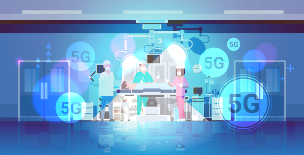

Objectif
Cette veille technologique a pour but d’analyser les usages, les enjeux et les impacts de la 5G dans les métiers du numérique, et notamment dans le développement web. En tant qu'étudiant en BTS SIO SLAM, je m'intéresse à la manière dont cette technologie transforme les performances et les expériences numériques.
Qu’est-ce que la 5G ?
La 5G (cinquième génération de réseau mobile) est une évolution des technologies de communication sans fil. Elle permet des débits allant jusqu'à 20 Gbit/s, une latence inférieure à 1 milliseconde, et une densité de connexion bien supérieure à la 4G. Cela permet de connecter simultanément des millions d'appareils avec une grande efficacité énergétique.

À quoi sert la 5G ?
La 5G est conçue pour répondre à des besoins variés : véhicules autonomes, réalité augmentée/virtuelle, téléchirurgie, objets connectés, vidéos 4K/8K en streaming, jeux en cloud, smart cities, etc. Elle offre une connectivité ultra-fiable dans des contextes critiques, et joue un rôle fondamental dans l’évolution de l’Internet des Objets (IoT).
Intérêt de la 5G en développement web
Pour les développeurs web, la 5G permet d’imaginer des expériences plus immersives et réactives. Les Progressive Web Apps peuvent devenir aussi fluides que des applications natives. Le chargement de contenus lourds (vidéos HD, assets 3D, AR) devient instantané. La latence très faible ouvre aussi la voie aux applications web en temps réel (visioconférences, jeux, data live…).
Acteurs majeurs dans la mise en place de la 5G
- Qualcomm : leader des puces 5G (modems Snapdragon X55/X65).
- Ericsson : déploiement d’infrastructures télécoms 5G en Europe et en Asie.
- Huawei : acteur technologique majeur (malgré des restrictions en Occident).
- Nokia : partenaire de nombreux opérateurs mondiaux pour la 5G.
- Orange / Bouygues / Free / SFR : opérateurs français en charge du déploiement national.